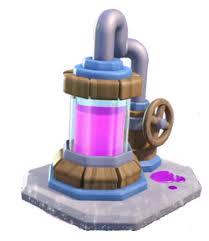
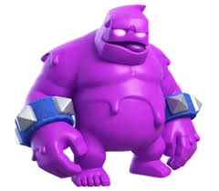

Elixir is the resource you use to play card during the game. You gain elixir over time through out the game. you can also gain elixir from an elixir pump and if your opponent uses an elixir golem.


Elixir counting is when you count how much elixir they have. you can do this by adding 1 elixir to the amount you think that have about every 3 seconds. Also you must subtract their total by how much they spend.
Elixir trade is how much elixir you spent to deffend how much elixir they used. For examlpe if they had a push worth 7 elixir and you used 5 elixir to deffend it that would be a positive 2 elixir trade and if you were to deffend a push worth 6 with 8 elixir than it would be a negative 2 elixir trade and you would have 2 less elixir then the other player.